3.4.4 Imágenes y objetos
Al insertar una imagen prediseñada, ésta aparece con los colores originales con que fue creada. PowerPoint permite modificar estos colores para adaptar la imagen a los colores de la presentación. Al trabajar con imágenes creadas en otros programas no podrá utilizar las herramientas de dibujo para modificar los colores de la imagen, pero podrá cambiarle el brillo y contraste de la imagen, recortarla y añadirle un borde.
| 1 | Haga clic sobre la imagen para seleccionarla. Automáticamente se abrirá el menú "Formato" (Format) en la cinta de opciones.
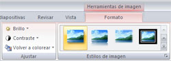 |
| 2 | Oprima el botón "Volver a colorear imagen" (Recolor).
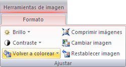 |
| 3 | Se abrirá el cuadro de diálogo "Volver a colorear la imagen" (Recolor).
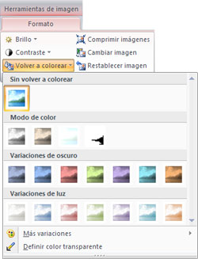
|
| 1 | Haga clic sobre la imagen para seleccionarla.Automáticamente aparecerá la pestaña "Imagen" (Picture) en la cinta de opciones. |
| 2 | Oprima el botón "Recortar" (Crop).
|
| 3 | Coloque el cursor en uno de los pequeños bordes que aparecen sobre el marco de la imagen.
|
| 4 | Mantenga presionado el botón mientras mueve el cursor hacia el centro de la imagen. |
| 5 | Suelte el botón del ratón cuando haya recortado los elementos deseados.
|
| 6 | Haga clic fuera de la imagen para desactivar la herramienta "Recortar"(Crop). |

Esta es una herramienta que brinda la oportunidad de modificar solamente la parte deseada de algún trazo o dibujo. Por ejemplo:
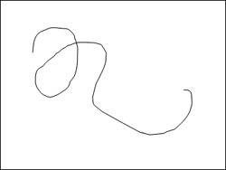
| 1 | Seleccione el objeto a editar, haciendo doble clic sobre la figura. |
| 2 | Elija la opción "Modificar forma" (Edit shape) del menú "Formato" (Format).
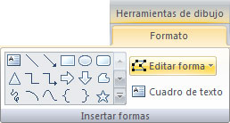 |
| 3 | Seleccione la opción "Modificar puntos" (Edit points).
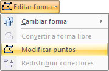 |
| 4 | Una vez hecho lo anterior, aparecerá el dibujo en forma punteada y el cursor en forma de estrella indicando cuáles puntos pueden ser modificados o eliminados.
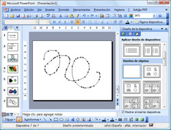 |
| 5 | Mueva los puntos a como desea modificarlos. Al terminar, haga clic fuera de la imagen para deshabilitar la herramienta.
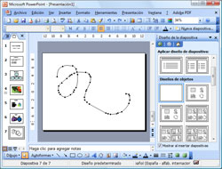 |
Al insertar varios objetos en PowerPoint, los objetos nuevos son colocados en primer plan; es decir se colocan "sobre" los objetos anteriores. Sin embargo, usted puede definir qué objeto debe ir al frente y qué objeto debe ir atrás.
Por ejemplo la imagen de abajo está formada por los tres objetos de arriba y cada objeto tiene un orden que se puede modificar según se requiera.
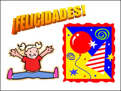
| 1 | Seleccione el objeto al que desea cambiar el orden.
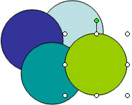 |
| 2 | Vaya al menú "Formato" (Format) de la barra de "Herramientas de imagen" (Drawing tools), ubicada en el grupo "Organizar" (Arrange).
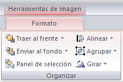 |
| 3 | Se abrirá un menú.Seleccione del menú, el comando "Organizar" (Order). Se abrirá un submenú con las siguientes opciones:
|
| 4 | Haga clic sobre la opción deseada para que aplique la modificación y acomode los objetos nuevamente en la diapositiva.
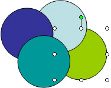 El objeto ordenado hacia el fondo. |

Esta herramienta permite alinear objetos sobre una misma guía o haciendo coincidir ya sea sus centros, bordes izquierdos o derechos, superiores o inferiores, de manera vertical u horizontal o alinear unos con respecto a otro.
| 1 | Insertar la cantidad de objetos deseados. |
| 2 | Vaya al menú "Formato" (Format) de la barra de "Herramientas de imagen" (Drawing Tools) y seleccione la opción "Alinear o distribuir" (Align or distrubute).
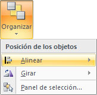 |
| 3 | Seleccione la opción que desea.
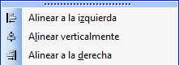 Los objetos se alinean unos con respecto a otros, haciendo coincidir su alineación derecha, izquierda o verticalmente. 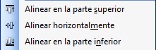 Los objetos toman la orientación de acuerdo al borde de la plantilla ya sea borde superior, inferior, o bien, que los objetos se encuentren centrados con respecto a los bordes de la plantilla. 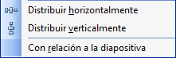 Los objetos tienen una distribución alineada, situándose a la misma distancia, de acuerdo a su orientación en la plantilla. |
Esta función sirve para darle un estilo a todos los objetos en un solo evento, es decir, sin tener que ponerle formato igual a cada uno.
Veamos cómo se hace
| 1 | Seleccione los objetos que se desean agrupar de manera de que todos estén seleccionados como se muestra en la imagen:
|
| 2 | Vaya al menú "Formato" (Format) de la barra de herramientas de "Dibujo" (Drawing Tools) y seleccione la opción "Agrupar" (Group). 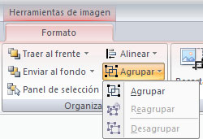 |
| 3 | Como resultado, los objetos que se agrupan se convierten en un solo objeto. Esto permitirá moverlos juntos, a otro lugar de la diapositiva y a otros archivos.
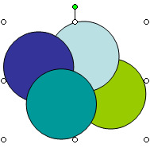 |

A veces los objetos que insertamos necesitamos que estén volteados o movidos hacia algún lado. Esto se puede hacer con esta herramienta.
Veamos cómo se hace
| 1 | Seleccione el objeto que desea girar. |
| 2 | Haga clic en la pestaña "Formato" (Format) de la barra de "Herramientas de imagen" (Drawing tools) y seleccione la opción "Girar y voltear" (Rotate or flip).
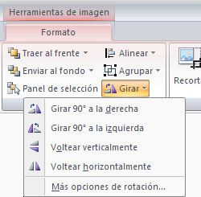 |
| 3 | A continuación seleccione la orden de giro o vuelta, entre los siguientes:
|
Esta función le sirve para desagrupar objetos que ya había agrupado; o reagrupar si los había desagrupado. Estas funciones le sirven cuando le da un mismo formato a los objetos, pueden ser textos, cuadros de color, alineación de imágenes, etc., pues de esta forma selecciona todos los objetos y les cambia sus características según desea.
| 1 | Seleccionar el objeto que desea desagrupar.
|
| 2 | Hacer clic en la pestaña "Formato" (Format) de la barra de "Herramientas de imagen" (Drawing tools) y seleccionar la opción "Agrupar" (Group), del menú que se despliega
hacer clic en "Desagrupar" (Ungroup).
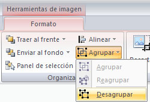 |
| 3 | Así los objetos quedarán nuevamente separados y se podrán manejar individualmente.
|
| 4 | Para anular la selección de objetos, haga clic en cualquier espacio en blanco. |